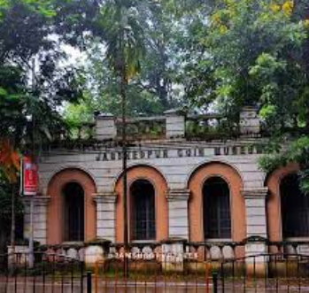
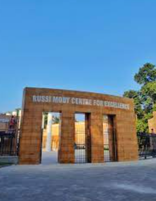
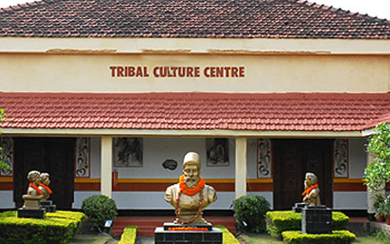

Jamshedpur Coin Museum

A visit to the Jamshedpur Coin Museum is like stepping into a time machine that takes you through
the monetary history of India. The museum features an impressive collection of coins, from ancient
to modern eras, showcasing the evolution of Indian currency. It’s a treasure trove for history enthusiasts
and numismatics, offering insight into the economic and cultural exchanges of the past. Its specialty lies
in the rare and antique coins on display, some dating back centuries, offering a unique glimpse into India's rich heritage.
Jamshedpur Coin Museum Address: Located near Jubilee Park, Sakchi, Jamshedpur.
Russi Mody Centre of Excellence

The Russi Mody Centre of Excellence is a must-visit for anyone interested in the history of Indian industry,
particularly the legacy of the Tata Group. The center offers a collection of photographs, artifacts, and documents
that narrate the growth of Jamshedpur and the crucial role Tata Steel played in its development.
Its speciality lies in the exclusive gallery dedicated to Russi Mody, a visionary leader.
Visitors get a deep dive into the industrial and community-building efforts
led by Tata Steel, making it a fascinating stop for history buffs and industrial enthusiasts alike.
Russi Mody Centre of Excellence Address: Circuit House Area, Northern Town, Jamshedpur.
Tribal Culture Center

For those who want to explore the indigenous heritage of Jharkhand, the Tribal Culture Center in Jamshedpur
offers a vivid cultural experience. The center highlights the life, art, and traditions of the local tribal
communities through its exhibits of tribal artifacts, handicrafts, and paintings. Its speciality is the immersive way
it presents the stories of various tribal groups, their unique lifestyles, and their contributions to the region’s culture.
It is an enriching experience for anyone interested in anthropology, tribal art, and cultural studies.
Tribal Culture Center Address: Sonari, Jamshedpur, Jharkhand.